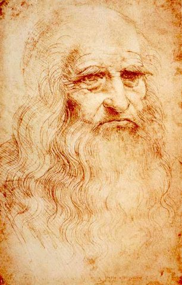
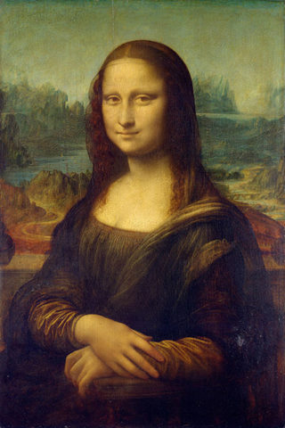

Историк искусства Мартин Кемп о происхождении Моны Лизы, научных основаниях живописи Леонардо и его вкладе в геологию
Леонардо да Винчи — незаконнорожденный сын важного флорентийского юриста. Он родился в 1452 году в городке Винчи, около Флоренции. Леонардо был подмастерьем Андреа Верроккьо — скульптора, художника и дизайнера — и работал художником и инженером при дворах Милана и Франции, для Флорентийской республики и в Ватикане. При разнообразии активностей ему больше подходила работа при дворах, чем на открытом рынке. И он стал звездой международного уровня.
Особенности таланта Леонардо
Леонардо да Винчи изучил научную базу искусства Ренессанса (перспективу, свет, пропорции, анатомию и так далее) и использовал ее почти в каждом аспекте исследования природы. Он видел искусство как предельную форму визуального знания, основанного на понимании принципов устройства природы. Во всех своих начинаниях он искал суть математических правил (математику, статистику, динамику), которые регулируют все происходящее в природе. Ведь они предписывают, каким образом мы должны пересоздавать природу в искусстве, науке и технологии. Каждое техническое приспособление можно воспринимать как новое «тело», чей слепок взят из природы, но не имитирован напрямую. Все изобретения Леонардо были основаны на научном понимании устройства природы. Ранее никто не делал ничего подобного.

Необходимо отметить, что многие художники Ренессанса работали инженерами. Скажем, Филиппо Брунеллески, архитектор флорентийского кафедрального собора Санта Мария дель Фьоре, учился на ювелира, но стал известным как инженер и первооткрыватель перспективы.
Очевидно, у Леонардо была склонность к созданию механизмов, он знал о машинах Брунеллески. Флорентийские артисты тоже изучали строение человеческого тела, но Леонардо пошел намного дальше своих предшественников: он занимался самообразованием в большом наборе дисциплин, изучая прежде всего те аспекты древности, Средневековья и мусульманской натурфилософии, которые ставили эмпирические исследования природы в центр человеческого понимания. Это был лучший путь постижения чудесного совершенства божьего творения. Поэтому к концу жизни, в 1519 году, на службе у короля Франциска I Леонардо почитали больше как мудреца, чем как художника.
Революционные открытия художника
Судить Леонардо по его влиянию на наше время — не самый удачный путь. Скорее мы должны оценивать его через влияние на других (в его эпоху и позже) и практическую важность для нас, а не величие его мысли самой по себе. Если говорить о его видении технологии, то оно охватывало огромные возможности гражданской и военной инженерии, включающие сложные уровни автоматизации. Однако конструкции грандиозных машин намеренно были фантастическими и жили на бумаге как форма «визуального хвастовства», выполненная скорее для покровителей, чем для реального воплощения.
До нас дошли далеко не все записи. Существует одно свидетельство о некоторых шлюзах, регулирующих реки, к которым Леонардо имел отношение в Венеции в 1500 году. Вероятно, есть множество подобных вещей, просто они не записаны. А такое базовое устройство как рычаг, скорее всего, уже было создано. Изобретения, которые он точно претворял в жизнь, — это дорогие и массивные механизмы для театра, которые включали в себя такие вещи, как открывающиеся горы.
В инженерии наиболее важным интеллектуальным вкладом было то, что Леонардо первым начал утверждать, что механические устройства должны быть спроектированы в соответствии с естественными математическими законами. Он также был первым, кто изобрел раздельные компоненты, «элементы машин», которые могли быть использованы в других устройствах. Если мы подходим к искусству как к изобретению, как бы он сам того хотел, то важно повторить, что он видел в живописи конечную форму визуального знания.
Он также изобрел метод «мозгового штурма» для эскизов, который привел к созданию динамичного характера композиции. Он изменил форму создания нарратива, и это видно в способах написания Мадонны, общения персонажей друг с другом, использования света, тени и цвета и изображения движения. В то время Микеланджело и Рафаэль были крайне впечатлены, а позже Рубенс, Пуссен и многие другие.
Искусство и наука времен Возрождения
Работа художника и ученого в то время была практически идентичной: требовалось изучить самым строгим образом все видимые эффекты природы, найти причину, почему вещи выглядят и работают именно так, а не иначе (с привлечением экспериментов, когда это необходимо и возможно). Такой подход распространялся и на искусство, и на науку. Правила, почерпнутые из наблюдения природы, доказывались возможностью воссоздания их в моделях. Например, да Винчи пришел к корректному пониманию движения крови в клапанах сердца, что дало возможность построить физическую модели их работы. Он также планировал создать стеклянную модель глаза, чтобы подтвердить, как он функционирует. Если он понимал, каким образом работает оптика во внешнем мире и как устроен глаз, значит, он должен был быть в состоянии создавать картины, которые выглядят как «вторая натура».
Это означает, что натурализм — это не вид фотографии природы, но ее реконструкция и демонстрация принципов ее работы.
Очарование «Моны Лизы»

Многие современные взгляды на «Мону Лизу» далеки от правды. Они подкрепляют желание людей, чтобы истоки картины были исключительным, поэтому мифов и легенд вокруг нее предостаточно. Это действительно выдающееся изображение, но его происхождение отнюдь не исключительное. Картина создавалась как портрет знатной флорентийской женщины — жены Франческо дель Джокондо, торговца шелком, купца и предпринимателя. Со временем она стала «универсальной картиной», в которую Леонардо вложил все свои знания об оптике, зрении, психологии, человеческой коммуникации, анатомии, геологии, воде и свойствах материалов. Он стремился превзойти итальянских поэтов в их стереотипных изображениях глаз и улыбок возлюбленных, которые всегда были ускользающие и неуловимые. Работу над этой картиной он вел всю свою жизнь, он вложил в нее очень много, но при этом ему удалось оставить очертания форм настолько неуловимыми, что каждый может потренировать свое воображение, рассматривая ее.
Чтобы разгадать все загадки этой картины, понадобится действительно большая книга. Мартин Кемп в соавторстве с Джузеппе Палланти издали в июне книгу, в которой собрано много информации.
Вклад Леонардо в геологию
Область, в которой он оказал наибольшее влияние, — это геология. По аналогии с человеческим телом он считал, что «тело земли» получает питание от «вен воды» и что у него есть своя собственная жизнь. Он изучал пласты того, что мы называем окаменелостями, и пришел к выводам, что огромные участки земли были в течение длительного времени затоплены водой. Однако несколько дней библейского потопа не могли быть ответственны за это. Он проявил грандиозную проницательность, описав, как кора Земли рушится и вновь поднимается с огромными сдвигами в относительных центрах тяжести неровной поверхности Земли и в водных областях. Он предполагал, что большая часть Тосканы была под водой и что однажды Средиземное море может превратиться в огромную реку. Кроме того, он утверждал, что Луна, по существу, похожа на Землю, на ней есть собственные океаны.
Эти революционные идеи, изложенные в «Лестерском кодексе», который сейчас принадлежит Биллу Гейтсу, подпитывали представления о древней истории Земли в XVII, XVIII и XIX веках. Кодекс был переписан огромное количество раз и был так широко доступен, как никакой другой манускрипт Леонардо.
Мифы о наследии художника
Существует множество прекрасных работ молодых ученых о каждой сфере творчества Леонардо, особенно о его науке и инженерии. Оригинальные рукописи, в частности «Атлантический кодекс», который хранится в Амброзианской библиотеке Милана, и «Кодекс Арунделла» из Британской библиотеки, до сих пор могут многое нам рассказать. Кроме того, много вопросов требуется разрешить относительно поздних исследований его манускриптов.
Наряду с этим происходит безумие, спровоцированное «Кодексом да Винчи» Дэна Брауна, «сдвинутые на Леонардо» ищут тайные коды и послания в его живописи и рисунках. Они придумывают сумасшедшие теории об изображениях животных, инопланетян, мистических номерах и персидских посланиях, спрятанных в «Моне Лизе». Браун создал своего рода пропасть между «популярным» и «реальным» Леонардо.
Стоит отметить, что с Леонардо связаны и разочарования: у него было так много идей и проектов и так мало реализованных работ. Но стоит помнить, что он создал самую известную в мире картину — «Мону Лизу» — и вторую самую известную — «Тайную вечерю», а также самый известный в мире рисунок — «Витрувианского человека».